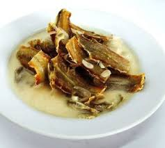
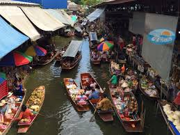

เกี่ยวกับตลาด
ตลาดวัดคลองบางน้อยเป็นตลาดเก่าแก่ริมน้ำที่มีประวัติศาสตร์ยาวนานกว่า 100 ปี ตั้งอยู่ในอำเภอบางคนที จังหวัดสมุทรสงคราม เป็นแหล่งค้าขายที่สำคัญของชุมชนริมน้ำ ที่ยังคงรักษาเสน่ห์ของวิถีชีวิตดั้งเดิมไว้ได้อย่างสมบูรณ์

อาหารท้องถิ่น
สัมผัสรสชาติอาหารท้องถิ่นแท้ๆ ทั้งขนมไทยโบราณ อาหารพื้นบ้าน และผลไม้ตามฤดูกาล

สินค้าพื้นเมือง
เลือกซื้อสินค้าพื้นเมือง หัตถกรรมท้องถิ่น และของที่ระลึกจากชาวบ้านในชุมชน

วิถีชีวิตริมน้ำ
สัมผัสบรรยากาศวิถีชีวิตริมน้ำแบบดั้งเดิม พร้อมชมสถาปัตยกรรมบ้านไม้เก่าแก่
การเดินทาง
วิธีการเดินทาง
เดินทางจากกรุงเทพฯ ใช้เส้นทางถนนพระราม 2 มุ่งหน้าสู่จังหวัดสมุทรสงคราม เลี้ยวเข้าสู่ถนนบางน้อย-บางพรม ตลาดตั้งอยู่บริเวณวัดคลองบางน้อย
เวลาเปิด-ปิด
เปิดบริการทุกวัน ตั้งแต่เวลา 06.00 - 14.00 น.
วันเสาร์-อาทิตย์และวันหยุดนักขัตฤกษ์ มีพ่อค้าแม่ค้ามาขายสินค้ามากเป็นพิเศษ